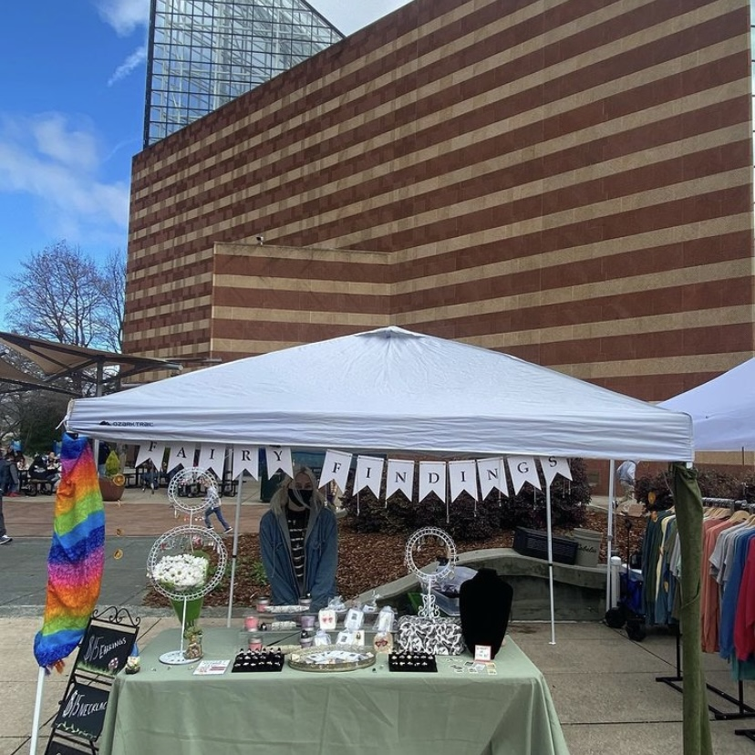

Welcome to FairyFindings
I started making jewelry a few years ago. I have always been an artist, but I had no clue jewelry making would be my passion. I began making jewelry to wear for myself, and it kind of tumbled into making it for coworkers, friends, and family! I worked full time in the repair shop at Jared Jewelry as an apprentice jeweler to understand what goes into making high-end jewelry. I worked hard to earn the Jewelry Designing certificate at IAP Career College, and I will finish my Business degree this spring! It is an amazing feeling to finally receive all of these credentials I have been working so hard for!
My favorite thing about making jewelry is seeing people wear the art I create. It is the best feeling in the world to watch someone enjoy and express themselves through what I created! Jewelry Making has been an extraordinary outlet for me, and I am constantly searching to improve and expand my knowledge about jewelry making!
